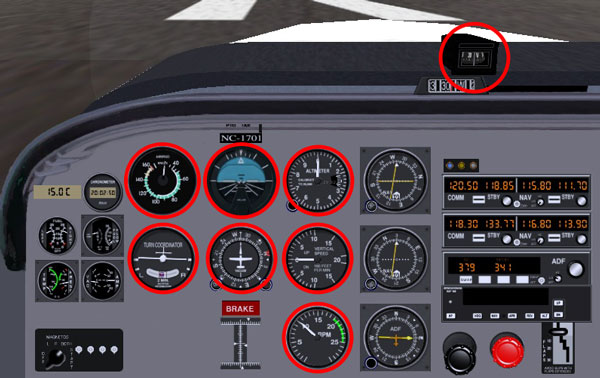

Aviation English: Flight instrument panel vocabulary exercise
The flight instrument panel is the place in front of the pilot in a cockpit which contains the instruments which provide the pilot with information to safely fly their plane. On this panel are a lot of different dials (circular instruments like clocks). These dials provide the pilot with different types of information (e.g. speed, altitude, how much a plane is turning etc...).
Image of a standard flight instrument panel with the main 8 instruments circled in red.
Knowing both what these different instruments are called and what they are used for is fundamental for either any pilot or anybody who wants to become a pilot.
To help you both learn what they are and (more importantly) remember it, I have created the below online exercise. Through first reading a text and then doing a quiz/test, you will learn the English names of the most important 8 instruments on an aircraft's flight instrument panel (each shown with a red circle around them in the above image), what they show and how they are used.
To learn the vocabulary for different parts of an airplane, do our exercises on parts of a plane vocabulary.
To see our other exercises on aviation English vocabulary, go to our aviation English exercise menu.
Exercise: Instruments for flying a plane
In the following conversation, Peter (a professional pilot) explains to Juan (a Spanish trainee pilot) the names in English and uses of the different instruments on a flight instrument panel.
From using both the context in the text and the instruments circled in red in the image of the flight instrument panel above, try to guess what each instrument in bold in the text is and what it's purpose is. Then do the quiz at the end to check if you are right.
Peter:'So now I'm going to ask you about 8 of the main instruments on the flight instrument panel that you need to use to fly a plane safely. Ok?'
Juan:'Fine.'
Peter:'So, tell me what the name of the instrument you use to know what altitude you are flying at?'
Juan:'That's called the altimeter and it shows the altitude in hundreds of feet.'
Peter:'Perfect. Some people think it's called the altitude indicator, but it isn't. The attitude indicator, not the altitude indicator, is the dial which is half blue and half black with a representation of the wings of an aircraft in the middle. This is used to show if a plane is flying level or not. And if it isn't, how much it is turning (left or right) and pitching (the nose of the plane pointing up or down).
So what's the name of the dial on the instrument panel used to show what the speed of the aircraft is?'
Juan:'In a car it's called a speedometer.'
Peter:'That's right, but not in a plane.'
Juan:'In a plane, it's called the airspeed indicator. And it shows the speed not in miles or kilometres per hour, but in knots per hour. '
Peter:'Yes it does. There's another dial which shows how much power the engine or engines are making (how many revolutions per minute they are turning at). What is this called?'
Juan:'This has a strange name. It is called a tachometer.'
Peter:'Perfect again. So, what instrument does a pilot use when they want to see how fast they are climbing or descending?'
Juan:'The altimeter?'
Peter:'No, that just shows the speed. If they want to know how many hundreds of feet per minute the aircraft is climbing or descending at, they use the vertical speed indicator. This is the dial where zero ('0') is positioned at the left side in the middle and then it has numbers (normally from 1 to 20) which go around the dial both from above it and below it.'
Juan:'I know which one you are talking about now.'
Peter:'And which instrument is used to see how much the plane is turning (either to the left or right) and if it is doing it safely?'
Juan:'That's the dial with an image of an aircraft seen from the back in the middle of the dial with a black ball that can move from side-to-side at the bottom. It is called the turn coordinator.'
Peter:'That's right. So what instruments does the pilot use to know in what direction the plane is flying in?'
Juan:'There are two. The first isn't on the panel, but above it. This is called the magnetic compass. And this shows in what compass direction the plane is heading in (i.e. north, south etc...). But pilots don't normally use this for navigating because it makes a lot of errors. So instead, they use a dial which has an aircraft in the middle which points to the compass direction which the plane is currently heading in. And it is called the heading indicator.'
Peter:'That's right. Well done.'
Quiz:
Below is a photo/picture of each of the instruments written in bold from the above text. Now choose the name from the question's selection box which you believe matches the photo/picture. Only use one name once. Click on the "Check" button at the bottom of the quiz to check your answers.
When the answer is correct, two icons will appear next to the question which you can press/click on. In the first icon,  , you can find extra information about the instrument (e.g. what it is, how it is used etc...) and a Spanish translation. In the second,
, you can find extra information about the instrument (e.g. what it is, how it is used etc...) and a Spanish translation. In the second,  , is where you can listen to the pronunciation of the name.
, is where you can listen to the pronunciation of the name.

Practice
Now that you understand the vocabulary, practise it. Click on the " " icon under each correct answer and listen to the name of the instrument and then test your own pronunciation in the 'prounciation speaking test'. Then create your own sentences with the new words/phrases.
" icon under each correct answer and listen to the name of the instrument and then test your own pronunciation in the 'prounciation speaking test'. Then create your own sentences with the new words/phrases.
Follow us on